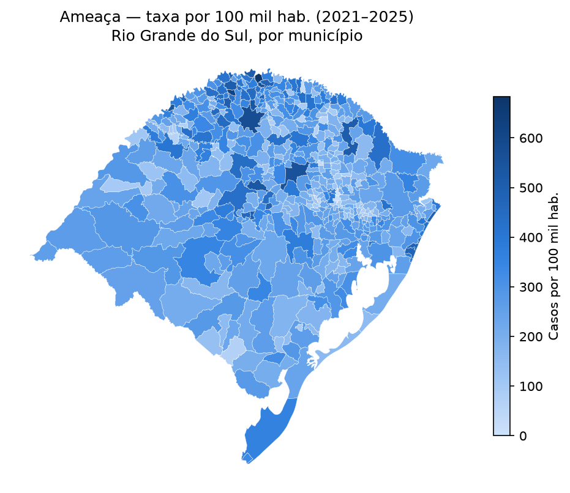
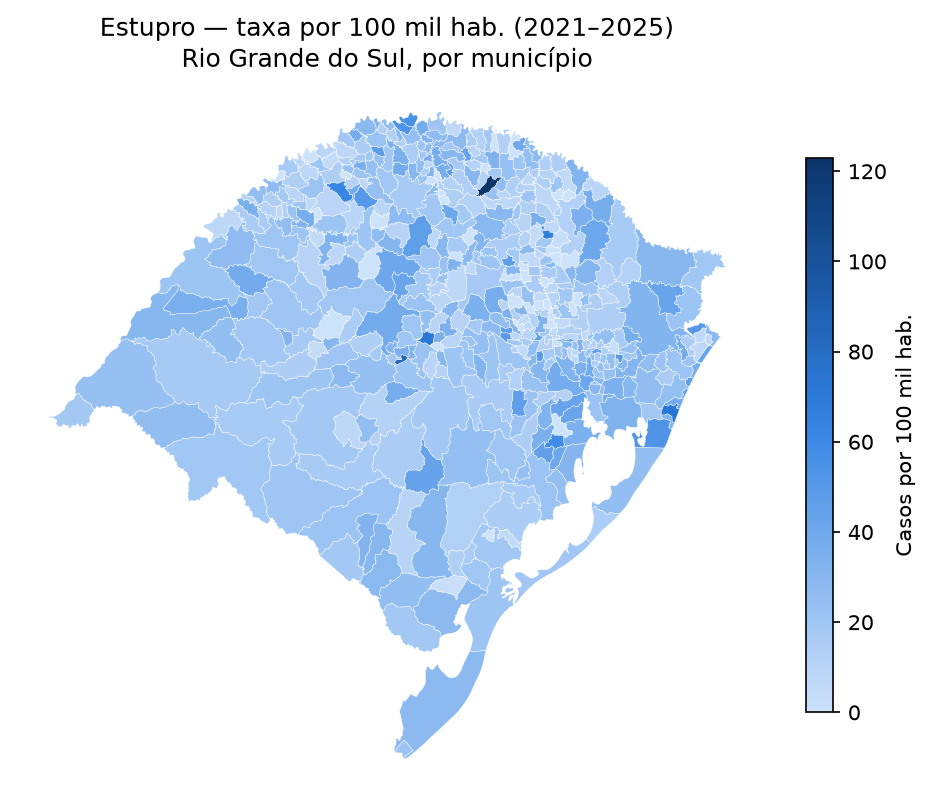
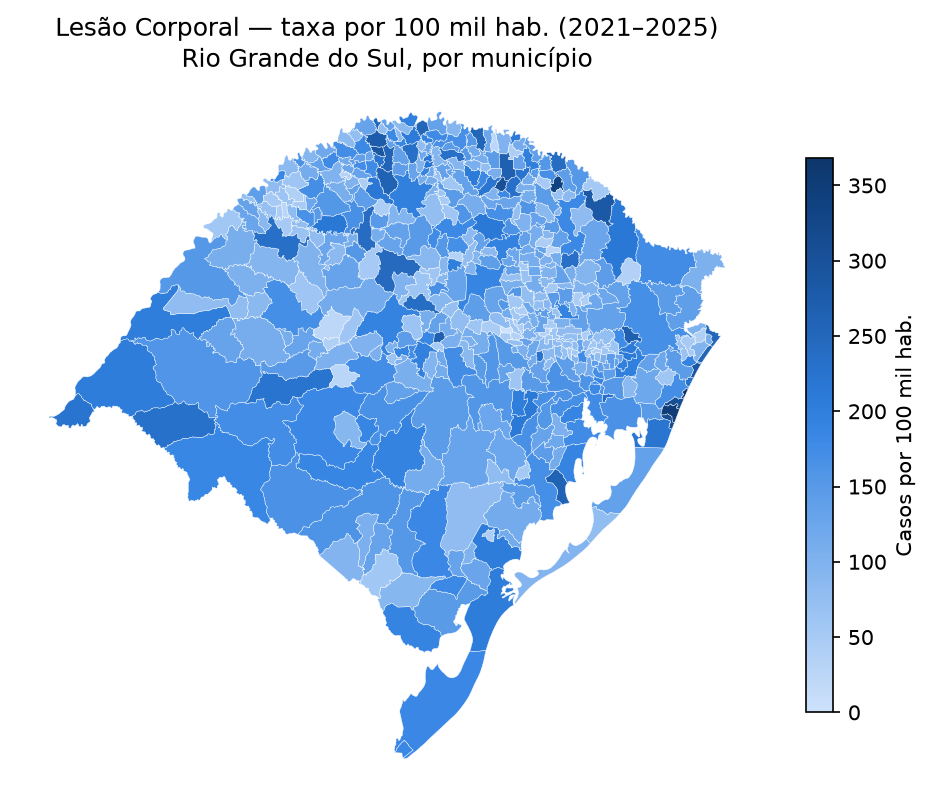
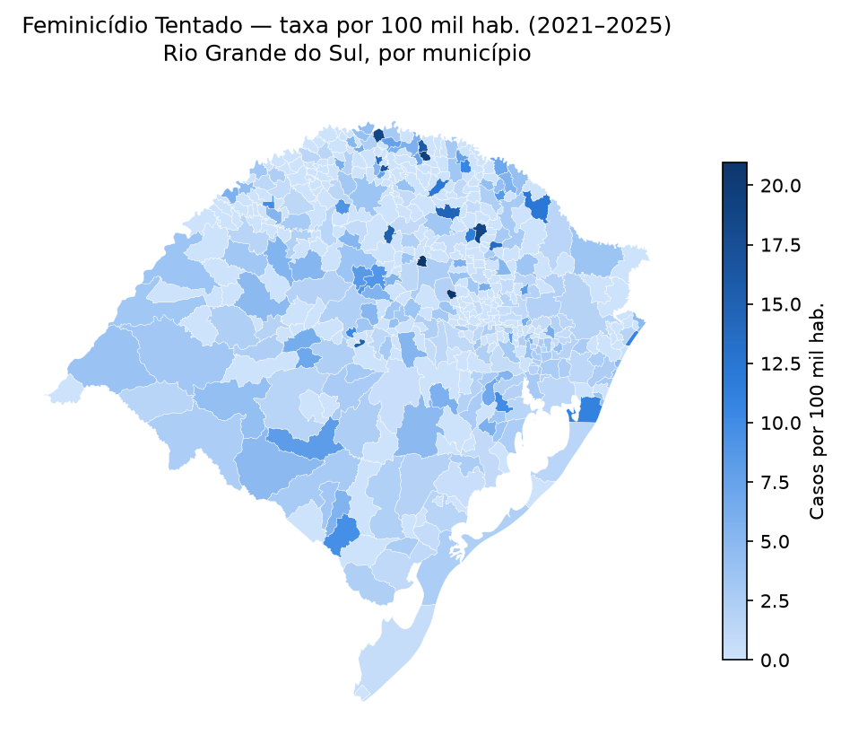
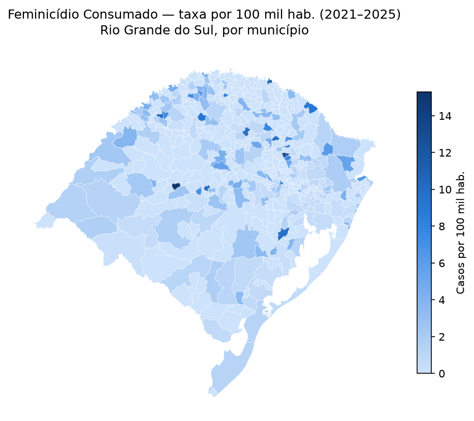
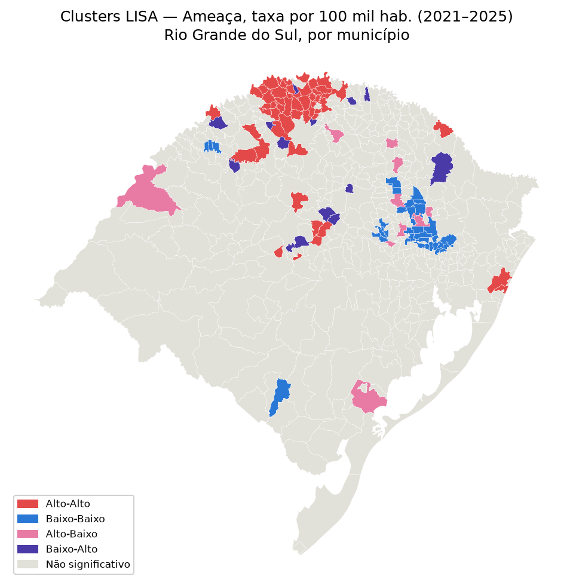
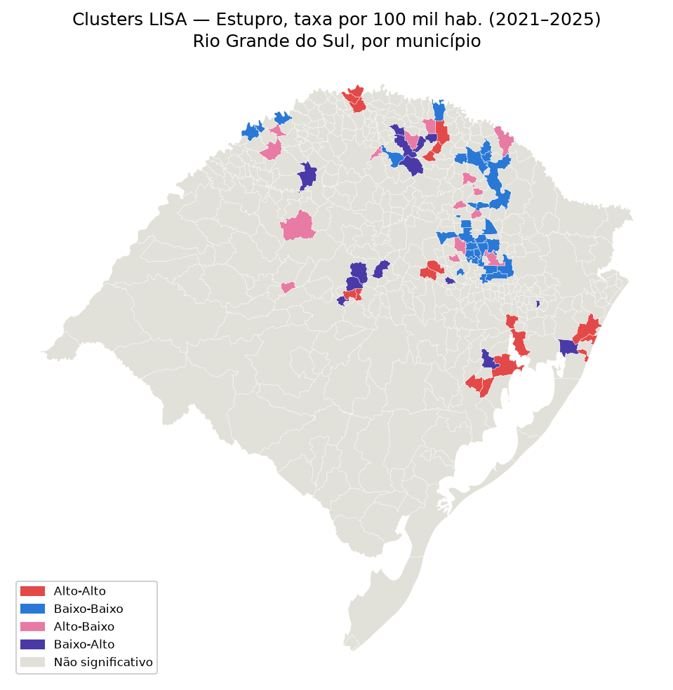
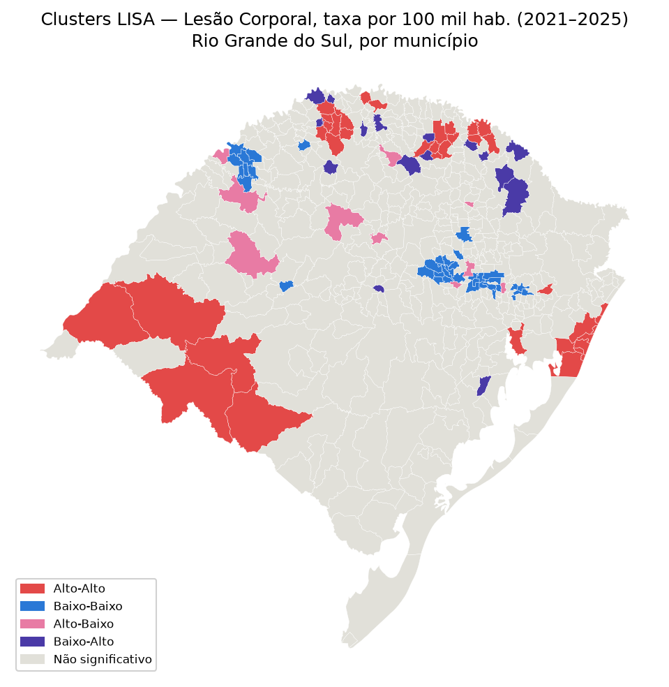

Mapas
Taxa por 100 mil hab. acumulada em 2021–2025, por município, com seletor de tipo de
crime. Mesma metodologia e mesmo recorte de notebooks/analise_espacial.ipynb.
Passe o mouse ou clique num município para ver o valor exato. Municípios em cinza não têm dado de taxa no período (população ausente).
Índice de Moran Global (2021–2025)
Testa se existe autocorrelação espacial (clustering) na taxa de cada tipo de crime — matriz de vizinhança Queen, 999 permutações.





Clusters locais (LISA)
Calculado só para os 3 tipos com Moran Global significativo — Feminicídio Tentado e Consumado não têm cluster espacial estatisticamente significativo neste desenho.


